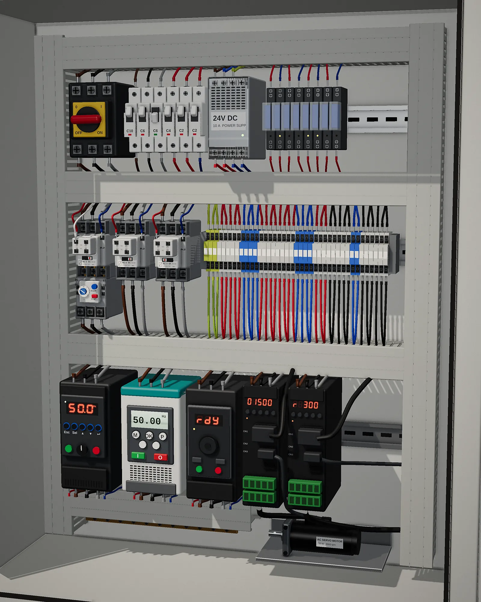

اتعلّم الكلاسيك كنترول والانفرتر والسيرفو بإيدك، قبل ما تقف قدّام اللوحة.
كورسات ومحاكيات تفاعلية لأشهر أجهزة الكنترول في المصانع: نفس الكيباد ونفس الشاشة ونفس الأطراف. توصّل الأسلاك، تكتب الباراميترات، تشغّل الموتور، وتعمل عطل وتصلّحه، وكل ده في المتصفح.
جديد على الكهربا؟ ابدأ بـكورس الأساسيات. عندك خبرة؟ ابدأ بـ PowerFlex 525 وادخل على «ابدأ من هنا».

انفرترات، كونتاكتورات وسيرفو: كل اللي في اللوحة، اتعلّمه هنا ←الموقع بالأرقام
تبدأ منين؟ امشي بالترتيب ده
كل كورس بيبني على اللي قبله. لو عندك خبرة، ابدأ من المرحلة اللي تناسبك.
- المرحلة الأولى · للمبتدئين
أساسيات الكهربا
لو جديد على الكهربا خالص، ابدأ من هنا.
- الجهد والتيار والمقاومة والقدرة
- التوالي والتوازي والمواد الموصلة
- الأفوميتر وقياس الأجهزة
- توصيل اللمبة والبريزة وأعطال البيت
- المرحلة التانية
الكلاسيك كنترول
توصّل دواير الموتور بإيدك سلك سلك.
- الريلاي والكونتاكتور والحماية
- التايمرات وتشغيل الموتور 3 فاز
- ستار/دلتا والفرملة وعكس الاتجاه
- 24 تمرين عملي وشهادة إتمام
- المرحلة التالتة
الإنسترومنتيشن
الحساسات والإشارات اللي في أي مصنع.
- إشارة 4–20mA وأعطالها
- الإنكودر: إنكريمنتال وأبسليوت
- حساسات الحرارة: ثيرموكبل و PT100
- اللود سيل ومعايرة الميزان
- المرحلة الرابعة
الانفرترات والسيرفو
محاكيات لأشهر الأجهزة في المصانع.
- Allen-Bradley و Siemens و Schneider
- Delta و Danfoss و Omron
- توصيل وباراميترات وتشغيل
- أعطال تعملها بإيدك وتصلّحها
نفس خطوات الشغل في المصنع، بالترتيب
محاكيات الأجهزة بتفتح على الوضع الموجّه: 6 تمارين محلولة، وكل تمرين 4 خطوات. لما تخلّص، الوضع الكامل مستنيك برسمة توصيل حيّة وجدول الباراميترات والأعطال والمراجع.
اختار الجهاز
نفس الموديل اللي قدّامك في الشغل أو اللي هتتمتحن عليه.
وصّل الأسلاك
باور وموتور وأطراف كنترول، والمحاكي بيقولك لو في غلطة.
ادخل الباراميترات بإيدك
من الكيباد بنفس الزراير، وعلامة ✓ أول ما القيمة تبقى صح.
شغّل الموتور
Start و Stop وسرعة وعكس اتجاه، وشوف التيار والتردد بيتغيروا.
اعمل عطل وصلّحه
أوفرلود، فقد فاز، أوفر فولت… افهم الكود واعمل Reset صح.
اختار جهازك وابدأ
دوّر بالاسم أو فلتر بالماركة. كل كارت بيفتح المحاكي على طول.
للي بيتعلّم، وللي بيعلّم
للطلبة والفنيين
- جرّب على الجهاز من غير خوف إنك تحرق حاجة.
- اتعلّم الكيباد قبل ما تقف قدّامه في المصنع.
- افهم كود العطل وسببه وإزاي تصلّحه.
- تمارين بتتصحح لوحدها، وتقدمك بيتحفظ على جهازك.
- شرح بالعربي لكل باراميتر، مش ترجمة حرفية.
للمدربين والسناتر
- اعرض المحاكي على البروجيكتور واشرح عليه لايف.
- عطل حقيقي في ثانية بدل ما تفك اللوحة.
- واجبات جاهزة: الطلبة يحلّوا التمارين من البيت.
- مقارنة نفس الوظيفة بين الماركات في محاكي واحد.
- من غير تسطيب: لينك واحد للفصل كله.
قبل ما تسأل
لازم أعمل حساب؟
ينفع أستخدمه من الموبايل؟
محتاج نت طول الوقت؟
هل البيانات مطابقة للمانيوال 100%؟
ينفع أدخل الباراميترات بإيدي زي الجهاز الحقيقي؟
تقدمي بيتحفظ؟
ينفع أستخدمه في كورس أو سنتر تدريب؟
الموقع تابع لشركة Rockwell أو Siemens؟
عندك سؤال أو عايز محاكي لجهاز معيّن؟
ابعتلنا الموديل اللي بتشتغل عليه في المصنع أو السنتر، وإحنا بنرتّب الكورسات الجاية على حسب طلبات الناس.
جاهز تبدأ؟
اختار جهاز وادخل على «ابدأ من هنا». أول تمرين بياخد حوالي 10 دقايق، وبعده هتعرف تمشي لوحدك.